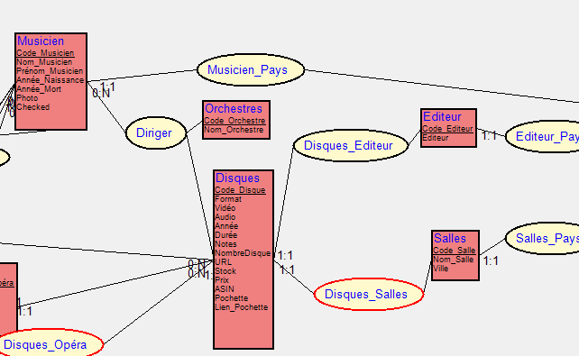

L'ouverture d'une fenêtre en mode "entité-association" permet de créer des schémas entité-association.
Le noeud par défaut est une entité. Sa création provoque l'ouverture d'une boîte de dialogue permettant de créer l'identifiant et les divers attributs de l'entité.
En reliant deux entités, on créé si nécessaire la seconde, puis on crée une association et les deux liens correspondants.
On peut préciser les cardinalités des liens.